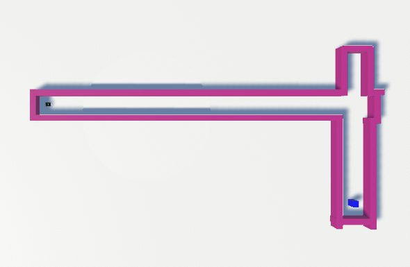
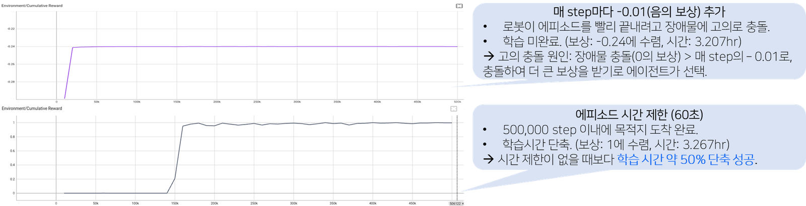
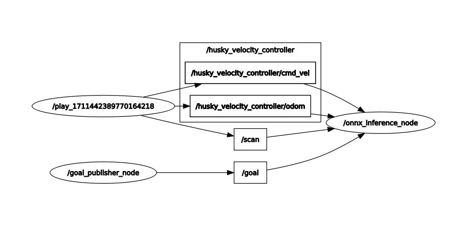
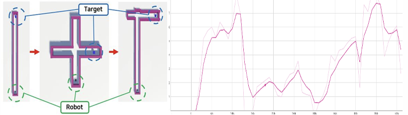
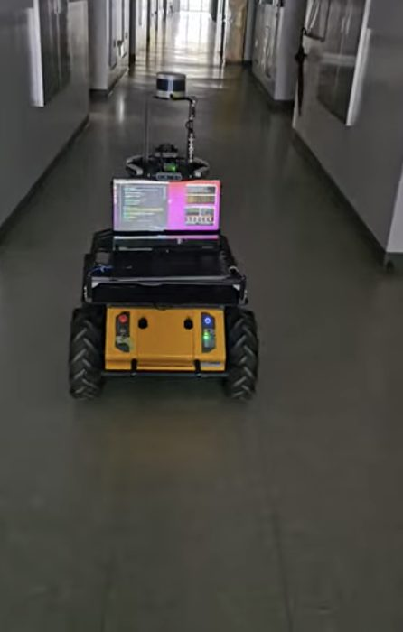

Sim-to-Real Mobile-Robot Driving
with Unity ML-Agents
- Built three Unity training environments (maze, static obstacles, real building corridor) with a LiDAR simulation matched to the actual VLP-16 spec.
- Exported the trained policy to ONNX and deployed it on a physical robot via ROS; closed the sim-to-real gap with LiDAR noise injection and curriculum learning.
- Achieved stable driving over a ~50 m straight corridor — about 6.7× the distance of the first attempt.
STEP 1Building the training environments
The Unity LiDAR was implemented to match the real Velodyne VLP-16 (channels, FOV, range) and its distances fed the RL state. Environments were built in order of difficulty: a maze, a static-obstacle course, and a replica of the lab building's corridor.


STEP 2Reward design and training analysis
Reward and termination were designed around LiDAR usage, distance, time, and collisions — and each change was analyzed through its training curves. Notably, a per-step penalty (−0.01) alone made the agent crash on purpose to end episodes early; switching to a 60-second episode time limit converged successfully while cutting training time by about 50%.

STEP 3Sim-to-Real transfer
The policy was exported to ONNX and wrapped in a ROS node (Ubuntu 18.04, Melodic) controlling the physical Husky A200. Early runs destabilized quickly due to differences between simulated and real LiDAR; injecting Gaussian noise into the simulated LiDAR and applying curriculum learning (straight → intersection → real corridor) fixed it.


- Stable driving over a ~50 m straight corridor — about 6.7× the distance of the first attempt
- Quantified the sim-to-real gains from noise injection + curriculum learning
DEMOVideos
Physical Husky A200 corridor driving
Curriculum learning process
